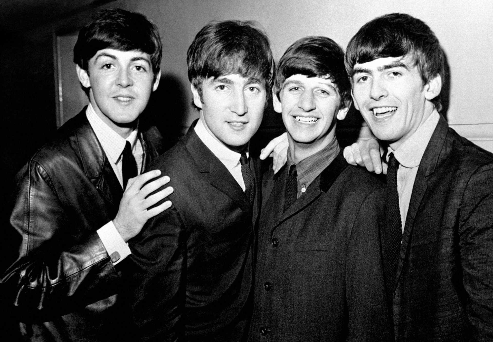

♡
Dani's Music Corner
things I like, things I think about, and music I can't stop listening to
♫ Favorite Artists
Black Country, New Road
beautiful, chaotic, slightly devastating.
Phoebe Bridgers
for staring dramatically out of windows.

Nick Drake
quiet songs for quiet moments.

The Beatles
because obviously.
Björk
strange, beautiful,
completely otherworldly.